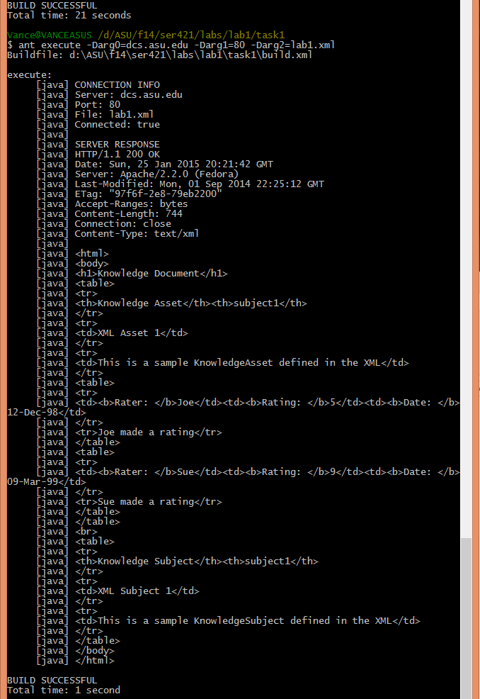

The specifications to this system are as follows
<KnowledgeDocument>
<KnowledgeAsset primarySubjectID="subject1">
<title>XML Asset 1</title>
<description>This is a sample KnowledgeAsset defined in the XML</description>
<KnowledgeRating Rater="Joe" Rating="5" EntryDate="12-Dec-98">
<description>Joe made a rating</description>
</KnowledgeRating>
<KnowledgeRating Rater="Sue" Rating="9" EntryDate="09-Mar-99">
<description>Sue made a rating</description>
</KnowledgeRating>
</KnowledgeAsset>
<KnowledgeSubject subjectID="subject1">
<title>XML Subject 1</title>
<description>This is a sample KnowledgeSubject defined in the XML</description>
</KnowledgeSubject>
</KnowledgeDocument>
The project builds using ant (targets task shown with example of how to execute)

Example execution of arguments that point to the above xml example with HTML printed to stdout
The source code for all components of this project can be viewed here.